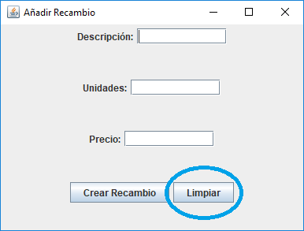

Aquí tenemos las distintas opciones de los recambios. En función de la seleccionada podremos trabajar con los recambios de distinta forma.

Para añadir recambios se nos mostrará este pequeño menú.

En descripción, colocaremos la descripción del recambio que queramos añadir.
En unidades, colocaremos las unidades del recambio que tengamos en stock que vamos a añadir.
En precio, colocaremos el precio del recambio que vamos a añadir.
Para añadir el recambio pulsaremos sobre el botón Crear Recambio.

Para vaciar los cuadros de texto pulsaremoss sobre Limpiar.
Cuando añadamos el recambio se nos mostrará un diálogo en el que nos dará por correcto el alta.

Para modificar un recambio se nos mostrará un pequeño menú con un selector para seleccionar el recambio que queramos modificar.


Aquí tenemos ahora el recambio seleccionado para su modificación en este pequeño menú. Para cambiar sus datos modificaremos en los diferentes cuadros de texto que nos encontramos.

En descripción,encontramos la descripción del recambio y podremos modificarlo.
En unidades, encontramos las unidades actuales del recambio y podremos modificarla.
En precio, encontramos el precio actual del recambio y podremos modificarlo.
Para guardar los cambios deberemos pulsar sobre el botón Modificar Recambio.

Para limpiar los campos usaremos el botón de Limpiar.

Para eliminar recambios, se nos mostrará un diálogo con un selector para seleccionar el recambio a eliminar.


Para eliminar el recambio que queramos pulsaremos sobre el botón eliminar recambio y se nos mostrará un diálogo que deberemos aceptar para que el recambio sea eliminado.

Si pulsamos en el menú sobre consultar recambios nos encontramos con una tabla en la que encontramos los recambios con todos sus datos.

Si pulsamos sobre el botón de Aceptar se nos cerrará la ventana.
Si pulsamos sobre imprimir PDF nos creará un pdf con una tabla en la que encontramos todos los recambios.